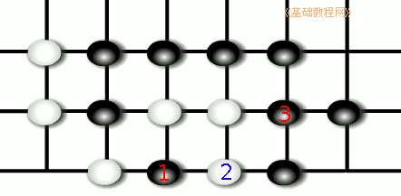

围棋入门基础教程
作者：TeliuTe 来源：基础教程网
进入中盘后，双方短兵相接，形成搏杀的局面，下面我们来看一个练习；
1、对杀
1）双方都没有做活的眼位，此时气多的吃掉气少的，如果气相同，则先走的胜；
2）有一只眼的可以吃掉没有眼的，俗称“有眼杀瞎”；
3）双方各有一个眼，由相互共用一口气，这样就形成了双活；
2、一些手筋
1）倒扑，先送一个子给对方吃，然后吃掉对方的子，下图中如何捉住两个白子呢？
先往白虎口里投一个子，然后把白三个子一块吃掉；
2）接不归，利用边线的特殊性，使得对方的子不能顺利粘回去；
先扑一个子进去，然后从外围紧气，就可以吃掉这两子了；

3）胀牯牛，先扑一手，让对方的子形成一个眼，然后在外围收紧气，使得对方的子动弹不得；
4）其他手筋还有“枷吃”、“金鸡独立”、“倒脱靴”，可以找一本讲围棋死活手筋的书仔细研究；
本节学习了围棋死活手筋的基础知识，如果你成功地完成了练习，请继续学习下一课内容；
本教程由86团学校TeliuTe制作|著作权所有
基础教程网：http://teliute.org/
美丽的校园……
转载和引用本站内容，请保留作者和本站链接。